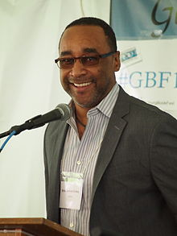
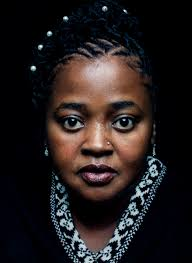

From reading to swimming to playing vollyball thses are some of the activites that i do to occupy some of my spare time. But since having started attending costaat i havent found the time to do it as much as i will love too.some of my favourite, authors.And some of the activites i enjoy doing
Eric Jerome Dickey
Eric Jerome Dickey is a New York Times best-selling American author best known for his novels about contemporary African-American life. Born: July 7, 1961 (age 57 years), Memphis, Tennessee, United StatesEric Jerome Dickey is a New York Times best-selling American author best known for his novels about contemporary African-American life., with such books as; Milk in my coffee,liar's game,Friends and lovers,sister sisterare just a few oof the books i have read from him.
Sister Souljah
Sister Souljah is an American author, activist, recording artist, and film producer. She gained prominence for Bill Clinton's criticism of her remarks about race in the United States during the 1992 presidential campaign. Wikipedia Born: January 28, 1964 (age 54 years), The Bronx, New York City, New York, United States.From writing one of my favourite most-loved book is called MIDNIGHT(A Gangster Love Story)to MIDNIGHT(And the meaning of love)MIDNIGHT 3(A Moment of Silence)The coldest Winter Ever,A Deeper Love Inside(The Porsche Santiaga Story).
Omar Tyree
Omar Rashad Tyree is an African-American novelis Born: April 15, 1969 (age 49 years), Philadelphia, Pennsylvania, United States Nominations: NAACP Image Award for Outstanding Literary Work, Fiction, MORE.From Flyy Girl, For the Love of Money,Sweet St.Louis.